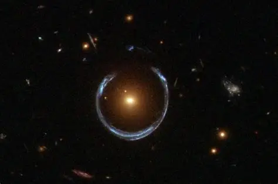
Cosmic Horseshoe gravitational lens system,which contains one of the most massive black holes ever discoverd.
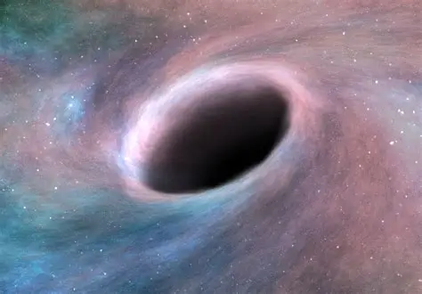
Holmberg 15A hosts a black hole about 22 billion times the Sun’s mass.
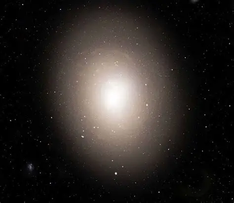
IC 1101 is the largest known galaxy, a supergiant elliptical about 1 billion light years away.
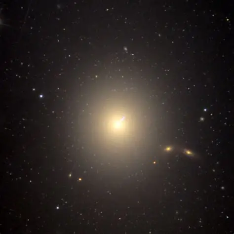
Messier 87 (M87) is a supergiant elliptical galaxy in the constellation Virgo, located about 53–55 million light years away.
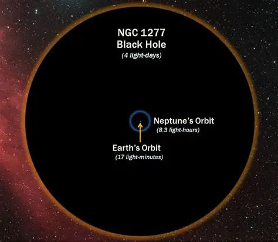
NGC 1277 is a compact lenticular galaxy in the constellation Perseus, about 220 million light years away.
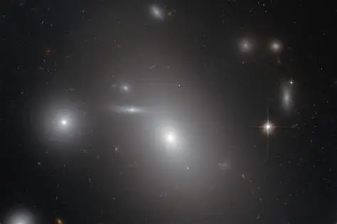
NGC 4889 is a supergiant elliptical galaxy located about 308 million light years away in the Coma Cluster.
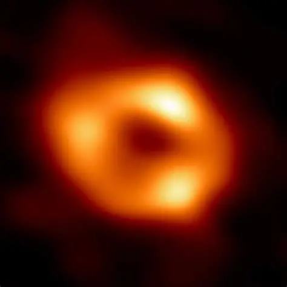
Sagittarius A* is the Milky Way’s central black hole, 26,000 light years away in Sagittarius.
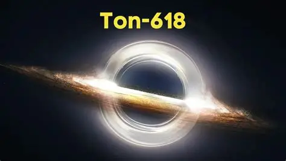
TON 618 is one of the most massive black holes ever discovered, classified as an ultramassive black hole.
Black holes are among the most fascinating objects in the universe. They form when massive stars collapse under their own gravity, creating regions where space and time are warped beyond recognition. In simple terms, a black hole is a place where gravity is so strong that nothing—not even light—can escape. Scientists study them not only to understand how galaxies evolve but also to explore the limits of physics itself.
| Black Hole Name | Discoverer | Date of Discovery |
|---|---|---|
| Sagittarius A* | Reinhard Genzel | 1974 |
| M87* | Heino Falcke | 2019 |
| Cygnus X-1 | Louise Webster | 1964 |
| V404 Cygni | Charles Bailyn | 1989 |
| GRO J1655-40 | Jeffrey McClintock | 1994 |
| LMC X-3 | Philip Charles | 1983 |
| NGC 1277 | Remco van den Bosch | 2012 |
| NGC 3115 | John Kormendy | 1992 |
| NGC 4395 | Alex Filippenko | 2003 |
| NGC 4889 | Karl Gebhardt | 2011 |
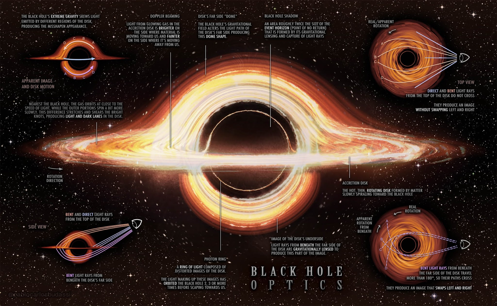
Stellar Black Holes: Formed from collapsing stars.
Stellar black holes are formed when massive stars collapse under their gravity after exhausting their nuclear fuel. These black holes are incredibly dense and have gravitational pulls so strong that nothing, not even light, can escape. They are the remnants of massive stars that have ended their life cycles and are crucial for understanding the life and death of stars, the behavior of matter under extreme conditions, and the fundamental laws of physics.
Supermassive Black Holes: Found at galaxy centers, like the one in the Milky Way.
Supermassive black holes (SMBHs) are the largest type of black hole, with masses ranging from millions to billions of times that of the Sun. They are found at the centers of most galaxies, including our own Milky Way. These black holes are incredibly dense, with gravity so strong that not even light can escape their grasp. They play a crucial role in shaping galaxies, influencing star formation, and possibly determining the evolution of the universe itself. Despite their importance, their origins and the reasons behind their immense size remain some of the universe’s greatest mysteries.
Mini Black Holes: Hypothetical, very tiny.
Mini black holes are theorized to exist based on the principles of quantum mechanics and general relativity. They are significantly smaller than stellar black holes, with masses less than one solar mass. The concept was introduced by Stephen Hawking, who suggested that black holes could form under extreme conditions, such as those present in the early universe shortly after the Big Bang.
Albert Einstein
Stephen Hawking
John Wheeler
Karl Schwarzschild
Roger Penrose
S. Chandrasekhar
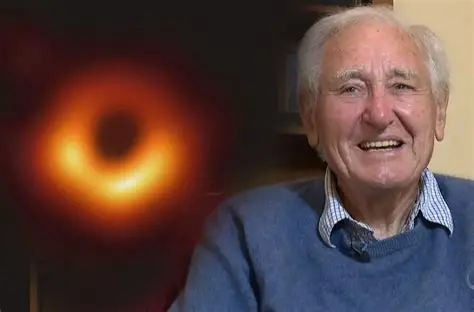
Roy Kerr
Andrea Ghez
Pierre-Simon Laplace
Sagittarius A*: The supermassive black hole at the center of our galaxy.
Sagittarius A (Sgr A) is a complex radio source located at the centre of the Milky Way Galaxy. The radio source consists of the supernova remnant Sagittarius A East, the spiral structure Sagittarius A West, and the bright compact radio source at the centre of the spiral structure, called Sagittarius A*. Sagittarius A* (pronounced “Sagittarius A-star”) is the supermassive black hole at the centre of our galaxy. The Milky Way’s central black hole lies at a distance of 26,673 ± 42 light years from Earth in the direction of Sagittarius constellation, near the border with Scorpius. Sagittarius A cannot be seen in optical wavelengths because of the effect of 25 magnitudes of extinction. The source is hidden from view by large dust clouds in the Milky Way’s spiral arms. The Galactic centre is best observed in the infrared and radio bands. The radio and infrared emissions from Sgr A come from dust and gas being heated to millions of degrees as they fall into the central black hole.
M87 Black Hole: The first black hole ever imaged in 2019.
M87, giant elliptical galaxy in the constellation Virgo whose nucleus contains a black hole, the first ever to be directly imaged. M87 is the most powerful known source of radio energy among the thousands of galactic systems constituting the so-called Virgo Cluster. It is also a powerful X-ray source, which suggests the presence of very hot gas in the galaxy. A luminous gaseous jet projects outward from the galactic nucleus. Both the jet and the nucleus emit synchrotron radiation, a form of nonthermal radiation released by charged particles that are accelerated in magnetic fields and travel at speeds near that of light. M87 lies about 55 million light-years from Earth. In full: Messier 87 Also called: Virgo A or NGC4486 In 2017 the Event Horizon Telescope obtained images of the central region of M87 that showed an asymmetric ring of radio emission surrounding a dark object. The central object is the black hole’s shadow, which is about five times larger than the black hole itself. The black hole is six and a half billion times the mass of the Sun and 38 billion km (24 billion miles) across. The gravitational field of the black hole is so strong that not even light can escape. The ring is brighter on one side because the black hole is rotating, and thus material on the side of the black hole turning toward Earth has its emission boosted by the Doppler effect. Gravitational energy released by gas spiraling down into the black hole produces a beam of electrons accelerated almost to the speed of light. The bright gaseous jet that emanates from M87 is thought to be radiation from this beam of electrons.
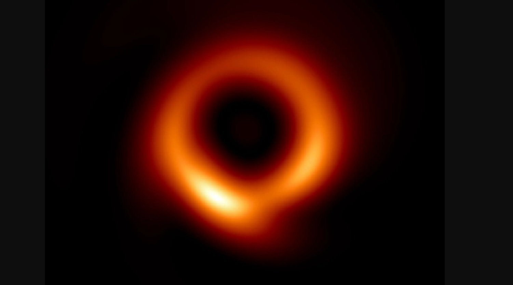
The event horizon is the boundary beyond which nothing, not even light, can escape a black hole's gravitational pull. It is the point of no return, where the gravitational force becomes so strong that it can tear apart whole stars and planets. The event horizon is a sphere with a radius called the Schwarzschild radius, named after the German physicist Karl Schwarzschild, who first calculated it. For a black hole with the mass of the Sun, the Schwarzschild radius is about 3 kilometers (1.9 miles), which is much smaller than the radius of the Sun, which is about 700,000 kilometers.
Spaghettification is a phenomenon in astrophysics where objects are stretched and pulled apart by the intense gravitational forces near a black hole. This occurs due to tidal forces, which create a gravitational gradient, causing the object to be stretched vertically and compressed horizontally. For example, if an astronaut falls into a black hole, the gravitational pull at their feet will be stronger than at their head, leading to their body being stretched like spaghetti. The process is irreversible and can occur even with small objects, as the tidal forces become so strong that they can overcome the internal forces holding the object together. Spaghettification illustrates the extreme conditions that can occur near black holes, where even solid objects can be torn apart by the gravitational pull.
Time dilation occurs near black holes due to their immense gravitational fields, causing time to slow down significantly for observers close to the event horizon compared to those far away. Understanding Time Dilation Time dilation is a phenomenon predicted by Einstein's theory of general relativity, which states that the passage of time is affected by gravity and velocity. In the context of black holes, the gravitational pull is so strong that it warps the fabric of spacetime, leading to significant differences in how time is experienced by observers at varying distances from the black hole.
The energy released by matter falling into black holes is a result of the process of accretion. As matter spirals inward towards the black hole, it heats up and releases energy in the form of radiation. This process is powered by the black hole's supermassive mass, which is millions to tens of billions of times greater than that of the Sun. The accretion disk, which is a few trillion kilometers across, is heated by friction and the release of gravitational potential energy as it falls inward onto the black hole. The energy released is so immense that it can be detected from billions of light-years away, making quasars and other active galactic nuclei (AGNs) visible to telescopes. The efficiency of this process is over ten times that of nuclear fusion, making it a key factor in the energy production of quasars and AGNs.
Listen to the eerie sound of the Perseus galaxy cluster black hole:
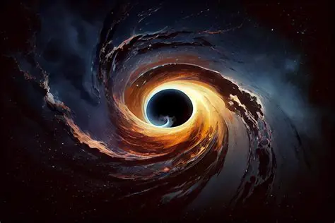
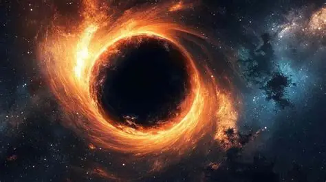
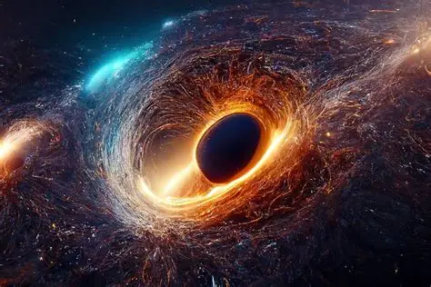
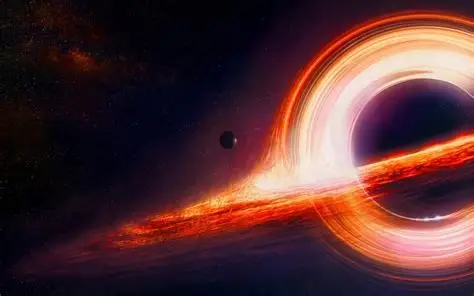